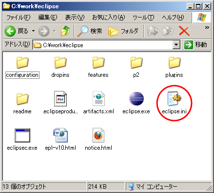
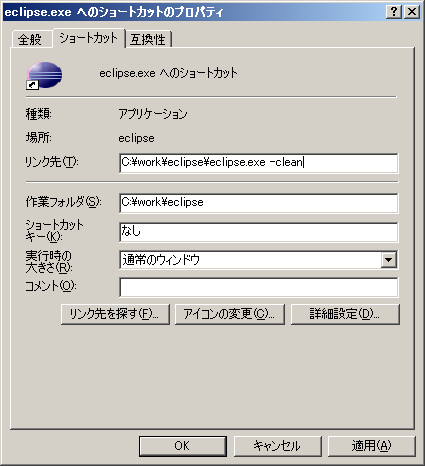
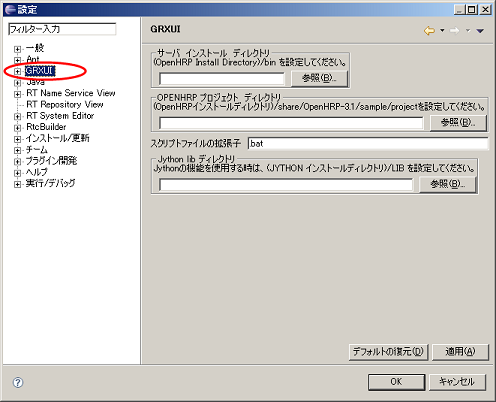

目次1. Eclipseの初期設定Ubuntu の場合Eclipse.iniの設定
Eclipseがインストールされているフォルダには Eclipse.ini ファイルがあります。 -vmargs -Xms128m -Xmx1024m Ubuntu9.10以降の環境でのEclipseの起動
Ubuntu9.10以降の環境でのEclipse 3.4SR2の実行にはスクリプトによる実行が必要です。 $ ./eclipse.sh と、入力して起動してください。なお、プラグインを導入して初めて起動する場合は $ ./eclipse.sh -cleanコマンドによる実行を行ってください。起動後にGrxUIの設定をしてください。 Windows の場合Eclipse.iniの設定
Eclipseがインストールされているフォルダには Eclipse.ini ファイルがあります。
 必要であれば -Xms と -Xmx を変更してヒープメモリサイズを環境に応じて設定してください。 ヒープメモリの使用範囲のサイズは -Xms 最小限から -Xmx 最大限以下の大きな値をとれるようになります。 あまり大きなサイズを指定すると起動できなくなりますので、各環境によって調節してください。 修正例: -vmargs -Xms128m -Xmx1024m Eclipseの起動
プラグインを導入して初めて起動する場合は、"-clean"オプションを指定して"eclipse.exe"を実行する必要があります。
 2. GrxUIの設定
Eclipseを起動し、メニューから"ウインドウ"→"設定"を選択すると、設定ダイアログ内が表示されます。
ダイアログの左側のツリー中の "GRXUI" をクリックして、表示された内容に従って設定を行ってください。
 GrxUI起動後に設定を修正した場合はGrxUIを再起動しないと反映されませんので、必ずGrxUIを再起動してください。 また、この設定はワークスペース毎に保存されますので、ワークスペースを変更した時は再度設定してください。 次に、GrxUIを起動します。 メニューから"ウインドウ"→"パースペクティブを開く"→その他"を選択し、GrxUIのパースペクティブを開くことでGrxUIが起動します。 |